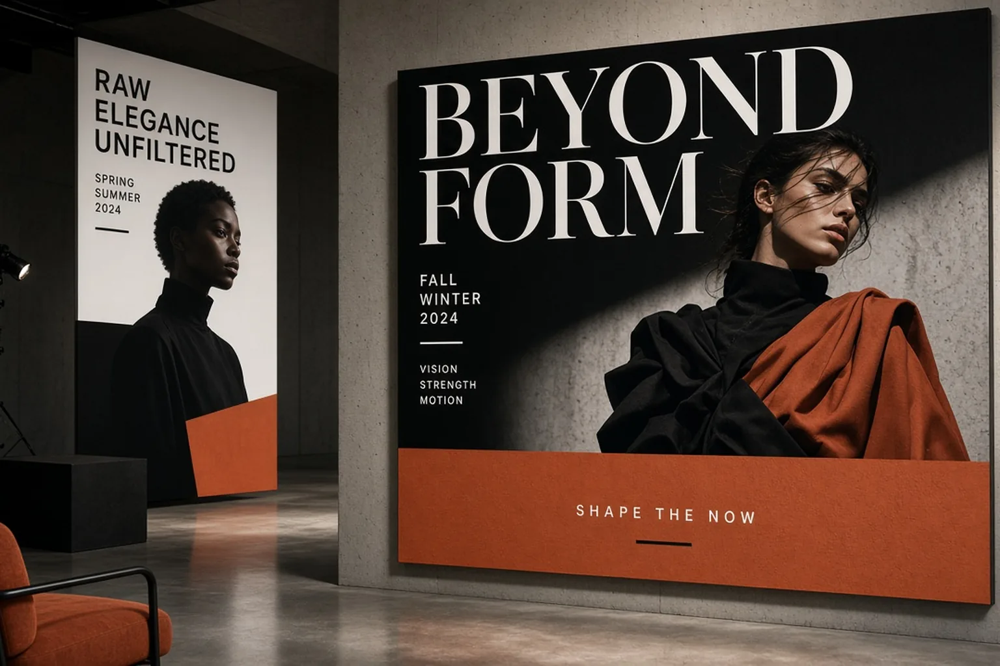
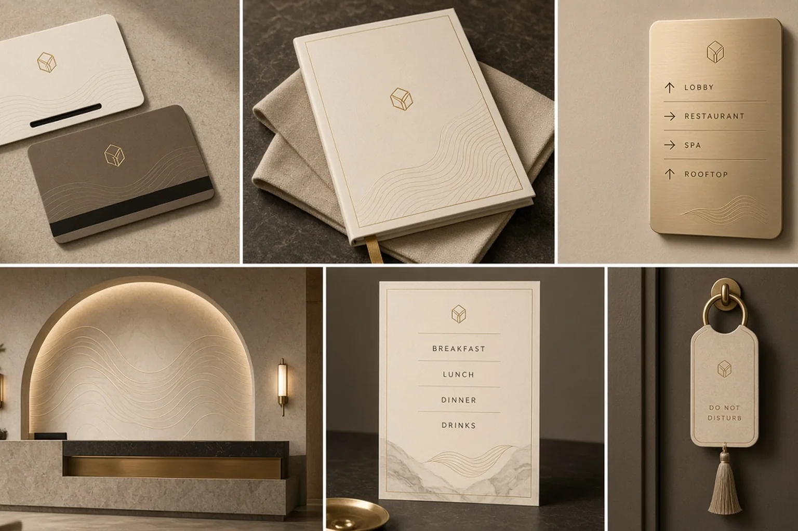
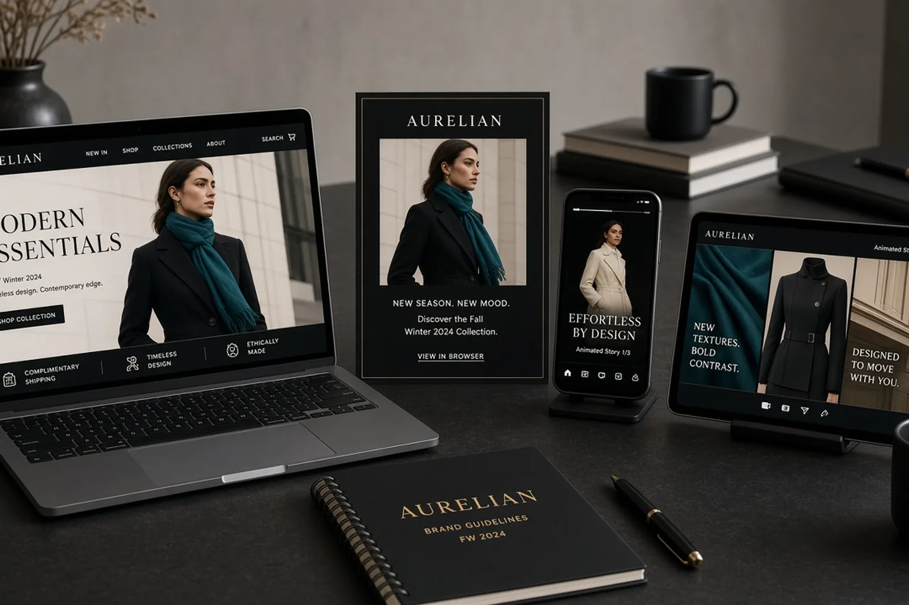

01
Web Design
Marketing sites, product marketing, and conversion-led landing systems.
Los Angeles · Creative Agency
Christina Jaramillo
Big-agency craft for digital products and cultural media—web, apps, games, video, and books designed to perform and to be remembered.

Five practices. One standard.
LoveThisLife operates like a focused creative agency—strategy, systems, and production under one lead. We ship digital experiences and media that look expensive because the craft is disciplined.
Websites, product apps, game interfaces, video & motion systems, and book design sit at the center. Brand, fashion, and marketing wrap around them when the story needs a full rollout.
Core practices
The five pillars we push hardest—each with depth, production rigor, and portfolio proof.
Marketing sites, product marketing, and conversion-led landing systems.

iOS/Android product UI, flows, and Figma systems that scale.

HUD, menus, icons, and visual language for playable worlds.

Title design, motion systems, storyboards, and campaign film craft.

Covers, interiors, typesetting, and publishing-grade production.
Services
Five flagship offerings—scroll to reveal. Full capabilities below.
High-impact websites and landing pages—IA, visual systems, and conversion craft for brands that need to perform online.
Mobile and product interfaces in Figma—flows, components, and polish that feel native and brand-true.
HUD systems, menus, icons, and visual assets—readable under pressure, cohesive in-world.
Motion design, title sequences, storyboards, and video branding systems for campaigns and product stories.
Cover-to-interior systems, typesetting, and print production for novels, art books, and publishing clients.
Capabilities
Web, app, game, video, and book lead—supported by brand, fashion, and marketing systems.
Experience
Senior leadership across digital product, games, motion, publishing, and brand—based in Los Angeles.

Lead creative for web platforms, app UI, game interfaces, video systems, and book design. Partner with LA product teams, studios, publishers, and brands who want agency-grade output with senior ownership.
Shipped marketing sites, product UI in Figma, and design systems for startups and mid-market brands. Owned responsive systems, component libraries, and engineering handoff.
Designed game HUD/UI asset packs and motion/title frames for campaigns. Bridged playable interfaces with cinematic brand storytelling.
Built publishing-grade covers and interiors, plus identity and campaign support—type, print, and image discipline that still underpins every digital project.
Built for from Los Angeles
Selected work
Web, app, game, video, and book first—then brand and campaign work that extends the system.

Designed a full marketing site and conversion landing stack in Figma—hero hierarchy, modular sections, and responsive rules. Built for performance: clear CTAs, fast visual rhythm, and a system engineering could ship without guessing.

End-to-end app UI—onboarding, browse, PDP, and checkout—with component libraries and tokens. Photography-led screens with restrained chrome so the product felt premium and fast to use.

HUD, menus, inventory, and icon packs tuned for readability in motion. Delivered a studio style guide so art and engineering could extend systems without breaking the world.

Created opener titles, lower thirds, end cards, and social cutdowns from one motion language. Storyboarded beats with the edit team so type, grade, and pacing felt cinematic—not templated.

Jacket systems, spines, and full interiors—type hierarchy, chapter openers, print specs. Coordinated paper, binding, and foil so shelf presence matched the manuscript across three titles.

Art-directed photography pacing, type, and paper choices for a seasonal lookbook. Tissue inserts, full-bleed spreads, and a quiet grid kept garments leading while the brand voice stayed refined and wearable.

Built a poster language with dramatic photography, bold display type, and modular crops for windows, transit, and social. One system scaled from gallery wall to Instagram without losing fashion heat.

Designed embossed cartons, bottle labels, and unboxing moments in champagne and charcoal. Spec’d foils, soft-touch coatings, and dielines so the shelf object felt as considered as the brand film.
Wordmark, monogram, and lockups with type, color, and stationery. Guidelines covered social avatars, packaging stamps, and partner co-branding so freelancers couldn’t dilute the look.
Jackets, spines, and full interiors—type hierarchy, chapter openers, and print specs. Coordinated paper, binding, and foil so shelf presence matched the manuscript tone across three titles.

Hand-drawn botanical and animal artwork finished for print, paced with the author and editor. Character consistency and generous margins kept the story readable for young readers.
HUD, menus, inventory, and icons in Figma and Illustrator—readable at small sizes with a cohesive fantasy look. Style guide let the studio extend assets without drift.
Designed product, cart, and editorial browsing flows with large photography and restrained UI chrome. Components and tokens in Figma kept engineering aligned with the brand’s soft luxury feel.

Professional skin, fabric, and color work for a fashion beauty set—natural finish, not plastic. Matched grade across hero, crop, and social so every channel felt like one shoot.

Built a compelling, highly professional kit for conference speakers and news announcements—LinkedIn carousels, Instagram posts/stories, and X graphics with one voice. Templates let the team publish weekly without redesigning from scratch.

Speaker spotlights, badges, program booklet, and stage backdrop for a professional association. Designed to grab attention while staying institutional—teal, cream, and clear hierarchy for large audiences.

Key cards, menus, signage language, and soft brass accents for a hospitality brand. Spatial graphics stayed quiet and tactile—designed to feel expensive without shouting.

Hero site moments, email headers, and social frames from one art direction. Kept fashion-forward imagery with clean CTAs so conversion didn’t fight the aesthetic.

Tri-fold brochure, flyer stack, poster, and pull-up banner under one system. Spec’d CMYK, bleeds, and vendor files so press day stayed calm and on-color.

Narrative, typography, charts, and a printed booklet for a seed raise. Designed for screen and handout so the story stayed sharp in the room and after.
Figma-first layout so covers and craft led, with quiet CTAs. Paired with retouching and social for launch week—print sensibility meeting digital clarity.
How the agency works

Discover
Listen hard—audience, product goals, and constraints. Surface what the web, app, game, film, or book must do—and what it can leave unsaid.
Explore directions, then refine. Mood, type, image, and interaction lock before production so the concept survives the build.
High-fidelity UI, motion frames, game assets, book layouts, and production files. Specs and QA so digital and print match the intent.
Guidelines, templates, Figma libraries, and walkthroughs—so your team can extend the work without calling for every crop.
About the agency
Founder · LoveThisLife Creative Agency · Los Angeles
I built LoveThisLife as a creative agency with senior ownership—web, apps, games, video, and books designed at a level that feels big-studio without the bureaucracy.
Based in Los Angeles, I partner with product teams, game studios, publishers, and brands who want one lead from strategy to ship—not a revolving door of juniors.